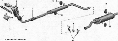

Cистема выпуска отработавших газовСистема выпуска отработавших газов состоит из выпускного коллектора, приемной трубы, основного и дополнительного глушителей и оборудована каталитическим нейтрализатором. Двигатель удовлетворяет нормам Евро П1 по токсичности отработавших газов. Соединение выпускного коллектора и головки блока уплотнено двухслойной металлической прокладкой. Выпускной коллектор двигателя — стальной. Каталитический нейтрализатор объединен с выпускным коллектором в единый неразборный узел — каталитический коллектор (катколлектор). Это сокращает время прогрева нейтрализатора до рабочей температуры и повышает его эффективность. В каталитическом коллекторе установлены два датчика концентрации кислорода — до и после нейтрализатора. Соединение каталитического коллектора с приемной трубой уплотнено термостойкой (металлоасбестовой) прокладкой. Фланец приемной трубы соединяется с фланцем выпускного коллектора через термостойкую (металлоосбестовую) прокладку. Для снижения передачи вибраций на кузов и уменьшения нагрузки на систему при колебаниях силового агрегата соединение приемной трубы с дополнительным глушителем сделано через металлокомпенасатор (см. рис.). СПРАВОЧНЫЕ ДАННЫЕ Моменты затяжки резьбовых соединений
* Повторное использование гаек не допускается. 
Система выпуска отработавших газов: 1 —прокладка; 2 — каталитический нейтрализатор; 3 — уплотнительная прокладка; 4 — металлокомпенсатор; 5 — дополнительиый глушитель; 7 — кронштейн каталитического коллектора; 8 — приемная труба; 8, 10 — подушки подвески глушителей; 9 — металлическое уплотнительное кольцо; 11 — основной глушитель; 12 — скобы хомута Соединение основного и дополнительного глушителей — жесткое, со стальным уплотнительным кольцом. Над дополнительным глушителем к кузову прикреплен термозащитный металлический экран. Система выпуска подвешена к кронштейнам кузова на четырех резиновых кольцах — подушках. Подушки подвески дополнительного глушителя и передней подвески основного глушителя взаимозаменяемы. Подушка подвески основного глушителя — усиленная. |